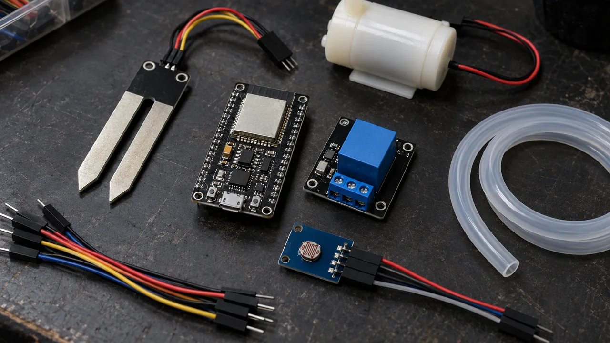
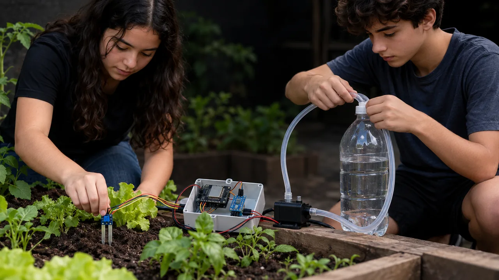
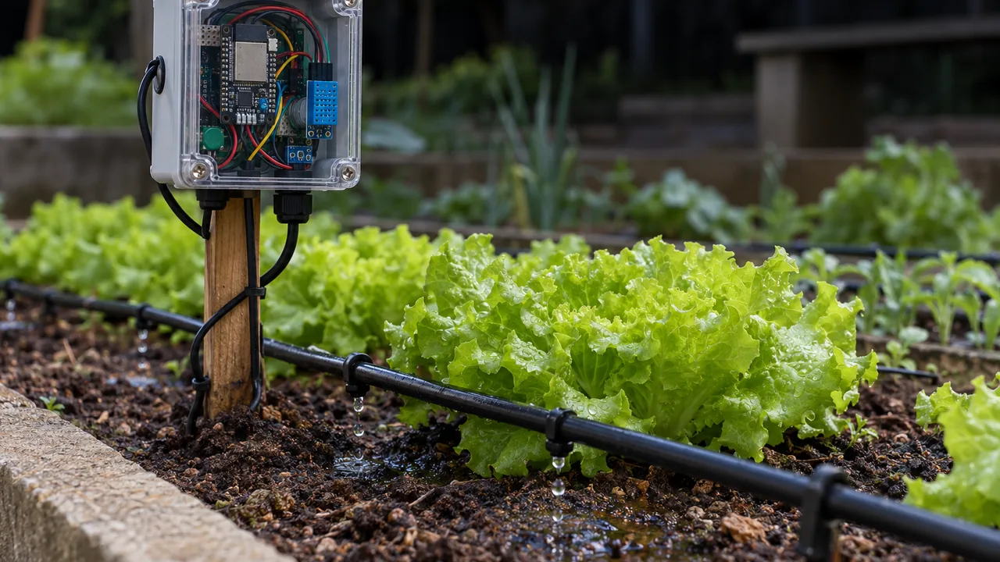

Solução 2 · Irrigação
Solução 2 · Irrigação
Irrigação que rega só quando a terra pede
Um sensor mede a umidade da terra, o ESP32 decide e liga uma mini bomba por alguns segundos. O painel mostra no celular a umidade, a luz e a temperatura. Serve para a horta da escola, a varanda do vizinho e o pequeno produtor.
Como funciona
Mede, decide, rega, mostra
O sensor capacitivo devolve um número que cai quando a terra fica molhada. O ESP32 lê esse número a cada 2 segundos e transforma em porcentagem. Se a terra estiver seca e a última rega já tiver acontecido há mais de 30 minutos, ele liga o relé, que liga a bomba. A espera entre regas dá tempo para a água descer até o sensor, senão a bomba encharca o vaso.
Peças
Lista de compras

| Peça | Para que serve | Preço aprox. |
|---|---|---|
| ESP32 DevKit V1 (30 pinos) | O cérebro, com Wi-Fi | R$ 30–45 |
| Sensor de umidade de solo capacitivo v1.2 | Mede a umidade sem enferrujar (o resistivo, de garfo, corrói em semanas) | R$ 7–12 |
| DHT22 (AM2302) | Temperatura e umidade do ar | R$ 18–28 |
| BH1750 (módulo GY-302) | Quantidade de luz, em lux | R$ 8–14 |
| Módulo relé 1 canal 5 V com optoacoplador | Liga a bomba. Compre um que aceite sinal de 3,3 V | R$ 6–10 |
| Mini bomba submersa 5 V + 1 m de mangueira | Leva a água do pote para o vaso | R$ 12–20 |
| Fonte 5 V 2 A (carregador de celular serve) | Alimenta a bomba | R$ 0–20 |
| Protoboard, jumpers, resistor 10 kΩ | Ligações sem solda | R$ 12–20 |
| Total | R$ 100–160 |
Preços aproximados de loja online brasileira em outubro de 2026, a conferir antes de comprar. Não inclui vaso, pote de água nem caixa de acabamento.
Ligação
O circuito, pino por pino
| Componente | Pino do componente | Liga no ESP32 |
|---|---|---|
| Sensor de solo | VCC · GND · AOUT | 3V3 · GND · GPIO 34 |
| DHT22 | VCC · GND · DATA | 3V3 · GND · GPIO 4 (resistor 10 kΩ entre DATA e 3V3; módulo com placa já traz) |
| BH1750 | VCC · GND · SDA · SCL · ADDR | 3V3 · GND · GPIO 21 · GPIO 22 · ADDR solto (endereço 0x23) |
| Relé | VCC · GND · IN | VIN (5 V do USB) · GND · GPIO 26 |
Passo a passo
Do pacote ao primeiro gole d'água

- Prepare a Arduino IDE. Instale a Arduino IDE 2, depois em Gerenciador de Placas instale "esp32" (Espressif). Em Bibliotecas, instale "DHT sensor library" e "Adafruit Unified Sensor" (Adafruit) e "BH1750" (Christopher Laws).
- Teste a placa sozinha. Ligue o ESP32 no USB, escolha a placa "ESP32 Dev Module" e a porta, e grave o exemplo Blink. Se não gravar, segure o botão BOOT quando aparecer "Connecting...".
- Ligue os sensores, sem a bomba. Siga a tabela acima. Confira duas vezes: 3V3 nos sensores, nunca o VIN.
- Calibre o sensor de solo. Grave o código, abra o Monitor Serial (115200) e anote o valor "bruto" com o sensor no ar (seco) e dentro de um copo d'água até a linha marcada (molhado). Troque os números de
SECOeMOLHADO. - Ligue o relé e teste com um LED no lugar da bomba. Quando a terra estiver seca, o relé tem que clicar por 5 segundos.
- Coloque a bomba. Bomba dentro de um pote com água, mangueira no vaso, fonte de 5 V pelo contato do relé. Deixe o ESP32 e a protoboard numa caixa, acima da água.
- Abra o painel. O Monitor Serial mostra o IP (ex.: 192.168.0.50). Digite esse IP no navegador do celular, na mesma rede Wi-Fi.
Código
Arduino IDE para ESP32
Troque o nome e a senha da rede, calibre SECO e MOLHADO e grave. O painel atualiza sozinho a cada 5 segundos.
// Irrigação inteligente — ESP32, Arduino IDE
// Bibliotecas: "DHT sensor library" e
// "Adafruit Unified Sensor" (Adafruit),
// "BH1750" (Christopher Laws)
#include <WiFi.h>
#include <WebServer.h>
#include <Wire.h>
#include <DHT.h>
#include <BH1750.h>
const char* REDE = "NOME_DA_REDE";
const char* SENHA = "SENHA_DA_REDE";
// GPIO 34: sensor de solo (AOUT)
const int PINO_SOLO = 34;
// GPIO 4: DHT22 (DATA)
const int PINO_DHT = 4;
// GPIO 26: relé da bomba (IN)
const int PINO_RELE = 26;
// BH1750: SDA no GPIO 21, SCL no GPIO 22
// A maioria dos relés liga com LOW.
// Se o seu ligar com HIGH, troque os dois.
const int LIGA = LOW, DESLIGA = HIGH;
// Calibre: sensor no ar (SECO) e na água
int SECO = 3300, MOLHADO = 1400;
// % de umidade que dispara a rega
const int REGAR_ABAIXO = 35;
// bomba ligada 5 s; espera 30 min
const unsigned long REGA_MS = 5000;
const unsigned long ESPERA_MS = 30UL * 60 * 1000;
DHT dht(PINO_DHT, DHT22);
BH1750 luz;
WebServer servidor(80);
int umidade = 0, regas = 0;
float tempAr = NAN, umAr = NAN, lux = 0;
unsigned long ultimaRega = 0, ultimaLeitura = 0;
bool jaRegou = false;
void ler() {
int bruto = analogRead(PINO_SOLO);
int pct = map(bruto, SECO, MOLHADO, 0, 100);
umidade = constrain(pct, 0, 100);
tempAr = dht.readTemperature();
umAr = dht.readHumidity();
lux = luz.readLightLevel();
Serial.printf("bruto=%d umidade=%d%%\n",
bruto, umidade);
}
void regar() {
digitalWrite(PINO_RELE, LIGA);
// versão 1: trava 5 s enquanto rega
delay(REGA_MS);
digitalWrite(PINO_RELE, DESLIGA);
ultimaRega = millis();
jaRegou = true;
regas++;
}
// /dados: JSON para o painel e para a IA
void dados() {
String j = "{\"umidade\":" + String(umidade);
j += ",\"temp\":" + String(tempAr, 1);
j += ",\"umidade_ar\":" + String(umAr, 0);
j += ",\"lux\":" + String(lux, 0);
j += ",\"regas\":" + String(regas) + "}";
servidor.send(200, "application/json", j);
}
// /: página que abre no celular (5 em 5 s)
void painel() {
String h = "<meta name=viewport "
"content='width=device-width'>"
"<meta http-equiv=refresh content=5>";
h += "<h2>Horta</h2><p>Terra: " + String(umidade);
h += "%<br>Ar: " + String(tempAr, 1) + " C";
h += "<br>Luz: " + String(lux, 0) + " lux";
h += "<br>Regas: " + String(regas) + "</p>";
servidor.send(200, "text/html", h);
}
void setup() {
Serial.begin(115200);
// bomba desligada antes de virar saída
digitalWrite(PINO_RELE, DESLIGA);
pinMode(PINO_RELE, OUTPUT);
dht.begin();
Wire.begin(21, 22);
luz.begin();
WiFi.begin(REDE, SENHA);
while (WiFi.status() != WL_CONNECTED) {
delay(500);
Serial.print(".");
}
Serial.print("\nPainel em http://");
Serial.println(WiFi.localIP());
servidor.on("/", painel);
servidor.on("/dados", dados);
servidor.begin();
}
void loop() {
servidor.handleClient();
if (millis() - ultimaLeitura < 2000) return;
ultimaLeitura = millis();
ler();
bool passou = millis() - ultimaRega > ESPERA_MS;
bool podeRegar = !jaRegou || passou;
if (umidade < REGAR_ABAIXO && podeRegar) regar();
}A camada de IA
O que a IA faz neste projeto
Não regar antes da chuva
O Open-Meteo dá a previsão de graça, sem cadastro. Na versão 2, o ESP32 consulta a chance de chuva das próximas horas e pula a rega se passar de 70%.
Pergunte à horta
Um script no seu computador lê os dados do ESP32 e manda para um modelo de IA com a sua pergunta: "a planta está recebendo luz suficiente?".
Foto da folha
Tire uma foto e mande a um modelo que entende imagem. Ele sugere "parece falta de água" ou "parece fungo". É um palpite: confirme com o professor de biologia.
Previsão para Novo Hamburgo (troque latitude e longitude pela sua cidade):
https://api.open-meteo.com/v1/forecast?latitude=-29.68&longitude=-51.13&hourly=precipitation_probability&forecast_days=1Script de pergunta, em Python, rodando no computador na mesma rede:
# pergunta.py — roda no computador,
# na mesma rede do ESP32
import json, urllib.request
# troque pelo IP do seu ESP32
URL = "http://192.168.0.50/dados"
dados = json.load(urllib.request.urlopen(URL))
pergunta = input("Pergunta: ")
prompt = (
"Você ajuda a cuidar de uma horta escolar. "
"Leitura dos sensores agora: "
+ json.dumps(dados) + ". "
"umidade = % da terra, temp = °C, "
"lux = luz. Responda em português, "
"em até 3 frases: " + pergunta
)
print(prompt)
# Mande o prompt ao modelo que você usa:
# - cole no chat do serviço de IA; ou
# - use a biblioteca oficial do serviço,
# com a SUA chave numa variável de
# ambiente (nunca escrita no código); ou
# - rode um modelo local no PC, sem chave.Teste e melhore
Confira antes de mostrar para alguém
- No ar, a umidade marca perto de 0%; no copo d'água, perto de 100%.
- O relé clica e desliga sozinho depois de 5 s.
- Depois de regar, a bomba espera 30 min mesmo com a terra ainda seca.
- O painel abre no celular e os números mudam quando você sopra no DHT22.
- Fio da bomba molhado não encosta em nada do ESP32.
| Erro comum | Causa provável | Como resolver |
|---|---|---|
| Umidade sempre 0% ou 100% | SECO e MOLHADO trocados ou sem calibrar | Refaça a calibração e confira se o seco é o número maior |
| Leitura do solo pula muito | Sensor no pino errado (ADC2) ou fio solto | Use o GPIO 34; faça a média de 10 leituras na versão 2 |
| DHT22 dá "nan" | Falta o resistor de 10 kΩ ou leitura rápida demais | Coloque o resistor; o DHT22 só lê a cada 2 s |
| ESP32 reinicia quando a bomba liga | Bomba puxando energia da placa | Bomba sempre na fonte separada, pelo contato do relé |
| Relé fica ligado direto | Relé liga com HIGH, não com LOW | Troque LIGA e DESLIGA no código |
Caderno de testes. Cada vez que mudar alguma coisa, anote numa linha. Depois de uma semana você sabe o limite certo para aquela planta, e isso vira argumento de venda.
| Data | Versão | O que mudou | Resultado |
|---|---|---|---|
| 20/10 | v1 | Limite 35%, rega 5 s | Vaso encharcou: regou 3 vezes seguidas |
| 21/10 | v2 | Espera de 30 min entre regas | Uma rega por dia, terra entre 40% e 60% |
| … | v3 | Pula a rega se a chance de chuva passar de 70% | Anote aqui |
Segurança
Água e eletrônica
Ficha de negócio
Como vender a irrigação

| Quem compra | Horta escolar (rega nas férias e nos fins de semana), quem tem varanda com vasos, pequeno produtor de hortaliça e floricultura |
| Custo do kit | R$ 100–160 (lista acima, a conferir) |
| Preço sugerido | R$ 250–400 o aparelho montado, testado, em caixa (sugestão) |
| Mão de obra | 1 a 2 horas para instalar, calibrar com a terra do cliente e ensinar a ler o painel |
| Assinatura opcional | R$ 15–30 por mês: ajuste dos limites, previsão do tempo e relatório da semana (sugestão) |
| Argumento de economia | Meça: litros por rega = vazão da bomba (L/min) × minutos ligada. Compare uma semana de rega fixa com uma semana de rega pelo sensor e mostre a diferença ao cliente |
Para ir além
Próximos passos
Para entender o que o modelo de IA faz com os dados, comece pelo curso IA do zero. Para controlar motores e sensores com mais precisão, siga para Robótica. Todos os cursos são abertos e gratuitos no INEMA.CLUB.